Overview
In this lab you will build a fully managed, real-time trade analytics pipeline on Confluent Cloud, entirely through natural language. You will direct Bob (your AI agent) with plain-English prompts; Bob translates them into the correct Confluent CLI commands and executes them on your behalf. Your job is to verify each step in the Confluent Cloud console as it happens.
The scenario: An online trading platform is streaming stock trades continuously. The team needs to enrich each trade with live customer profile data, then use built-in machine learning to detect which stocks are surging before the peak hits.
By the end of the lab you will have provisioned and wired together the following assets:
| Asset type | Purpose |
|---|---|
| Kafka Cluster | Managed broker that carries all event streams |
| Kafka Topic (×2) | Continuous streams of synthetic user and trade events |
| Source Connector (Datagen ×2) | Generates user profile and stock trade data into their respective topics |
| Flink Compute Pool | Serverless compute that runs all Flink SQL statements |
| Flink Materialized Table (×3) | Keyed user lookup, enriched trade stream, and per-symbol forecast |
| Snowflake Sink Connector | Streams the trades_forecast topic into Snowflake in real time |
| Snowflake Table | LAB.CONFLUENT.TRADES_FORECAST: auto-created, live ML forecast data |
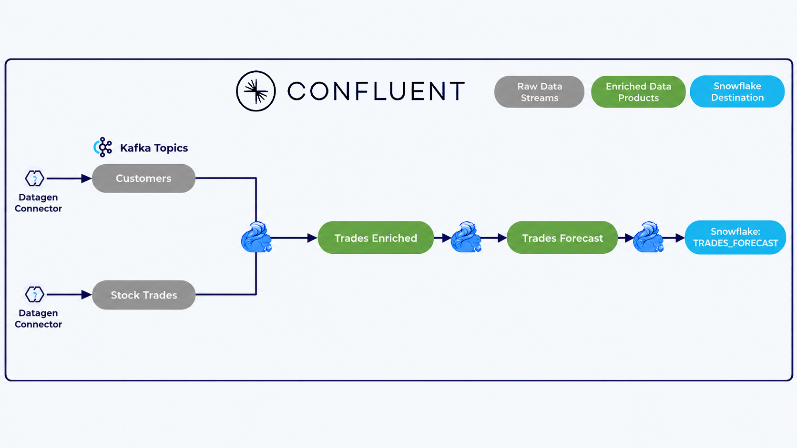
Get the Lab Files & Set Up Bob
Before you start prompting Bob, download the lab folder and open it in Bob. This takes a few minutes and only needs to be done once.
0.1 Download the lab folder from Box
- Open the lab Box link.
- Download the entire
Bob-Confluent-Lab-mainfolder to your computer. Do not download individual files from inside it. - If your browser downloaded it as a zip file, unzip it.
0.2 Open the folder in Bob
- In Bob, choose File → Open Folder.
- Select the
Bob-Confluent-Lab-mainfolder that directly contains the.bobfolder and open it. After unzipping, this may be nested inside another folder with the same name, so open the innermostBob-Confluent-Lab-main.
0.3 What's inside the folder
The folder contains a single hidden .bob folder. It holds everything Bob needs for this lab:
.bob/skills/: skill files that give Bob best practices for working with Confluent Cloud (confluent-cloud) and Snowflake (snowflake-connector), so it follows the recommended approach when it runs CLI commands from your plain-English prompts..bob/mcp.json: the MCP config file that connects Bob to the Tavily web search server.
0.4 Configure the Tavily MCP
The Tavily MCP server lets Bob access the web to look up information when it needs to. It is already set up for you, so you only need to add your own API key.
Check the MCP config
Open .bob/mcp.json and confirm it looks like this:
Get your Tavily API key
- Sign up for a free account at app.tavily.com.
- Copy your API key from the dashboard (it starts with
tvly-). - In
.bob/mcp.json, replaceYOUR_TAVILY_API_KEYin the URL with your key.
Verify
In Bob, open Settings → MCP. The tavily server should show as connected. If it does not, reload the Bob window and double-check that the key in the URL is correct and has no extra spaces.
Authentication & Environment Setup
Log in to Confluent Cloud via the CLI and set your active environment context to the pre-provisioned lab environment.
CLI Login
Run the following command to authenticate with your Confluent Cloud account:
This will open a browser window for SSO login. Once authenticated, your credentials are saved locally for the session.
Find Your Lab Environment
A Confluent environment has already been created for this lab. You do not need to create one or set it as active via the CLI. Simply list your environments to find the lab environment name:
The environment name shown in the output (e.g. dev-day-env) is what you will reference in your prompts to Bob.
Open Confluent Cloud Environments and double-check that the environment name matches what you saw in the CLI output. This is the name you will use in your prompts to Bob, for example: "Run this in my dev-day-env environment."
The environment name dev-day-env shown in the screenshot below is just an example. Your pre-created lab environment may have a different name. Always use the actual environment name returned by confluent environment list (or check it directly in the Confluent Cloud UI).
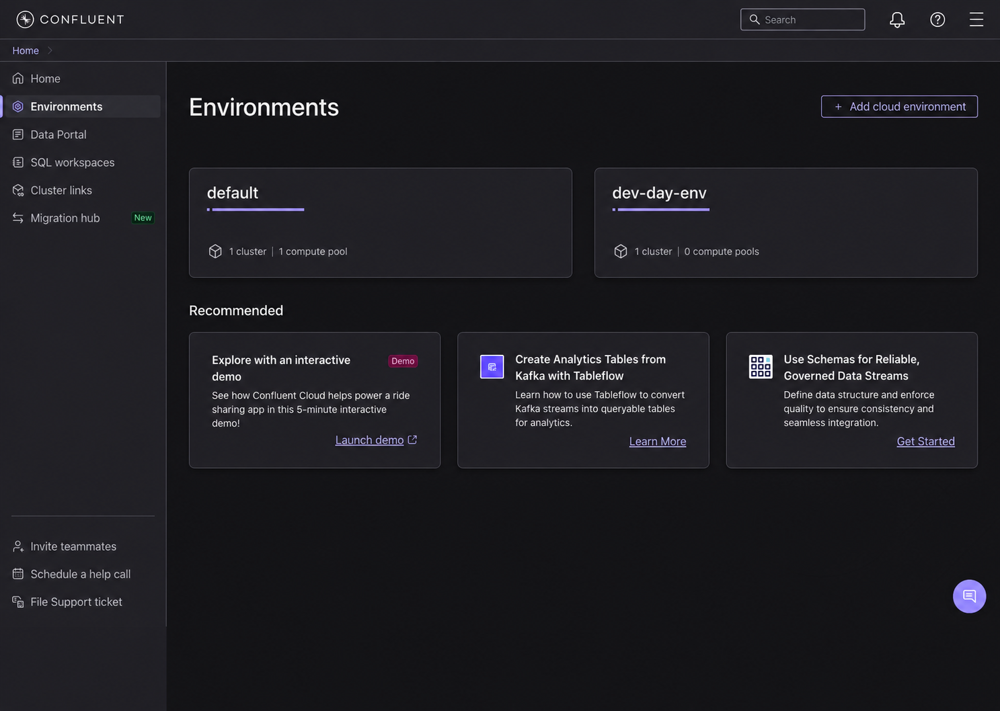
Provision Managed Kafka Cluster & API Keys
Ask Bob to provision a managed Kafka cluster and generate the necessary API keys.
Prompt Bob
"Provision a Standard Kafka cluster called dev-day-cluster in AWS us-east-2 (Ohio) in my active environment. Once it's running, generate a cluster API key and secret and configure the CLI context to use them."
Bob provisions the cluster, waits for status UP, and configures authentication:
Navigate to Clusters in the Confluent Cloud console. Confirm your cluster status is Running.
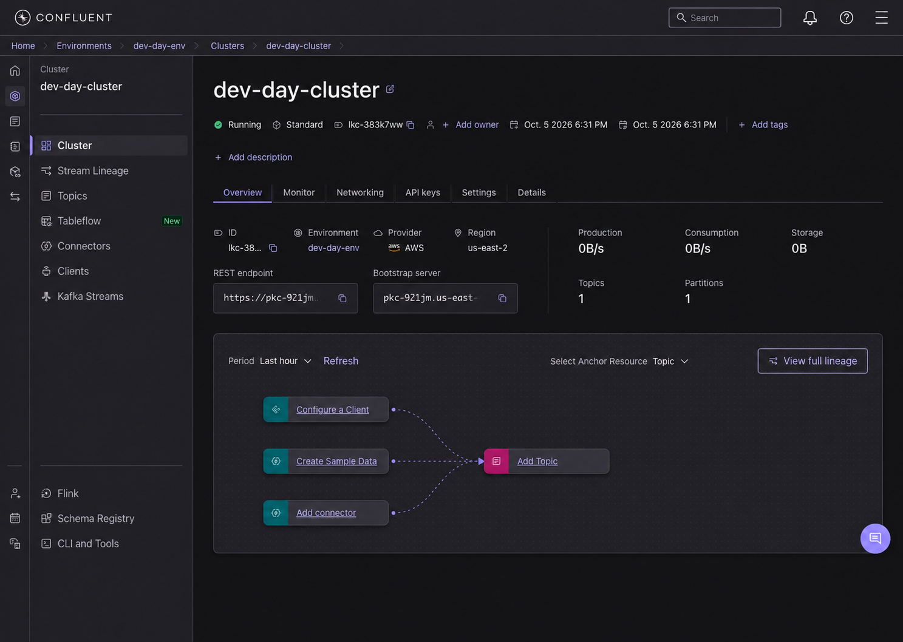
Deploy Datagen Source Connectors
Ask Bob to stand up the mock data streams using Confluent's Datagen Source connectors.
Prompt Bob
"Deploy two Datagen Source connectors to my cluster using AVRO format: one for Users (sample_data_users topic using the USERS quickstart) and one for Stock Trades (sample_data_stock_trades topic using the STOCK_TRADES quickstart). Then verify that messages are streaming into both topics."
Bob generates the connector configuration files dynamically with your cluster credentials and deploys them:
Navigate to Connectors in the Confluent Cloud console. Confirm both connectors show Running status with active throughput.
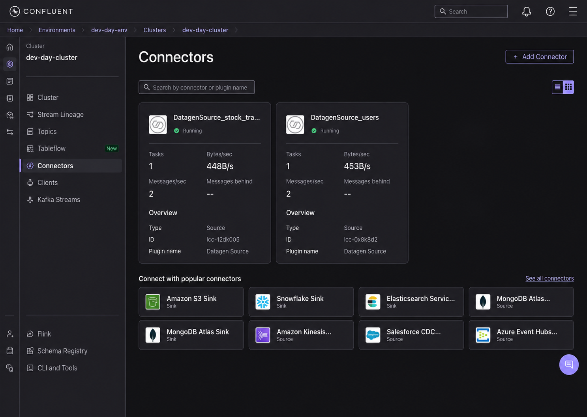
Provision Apache Flink Compute Pool
Ask Bob to set up the serverless Flink compute pool in the matching region.
Prompt Bob
"Create a Flink compute pool called dev-day-pool in AWS us-east-2 with 10 max CFUs in my environment, and set it as my active compute pool."
Bob provisions the Flink pool and switches the CLI context:
Navigate to Flink → Compute pools in Confluent Cloud. Confirm dev-day-pool shows Running.
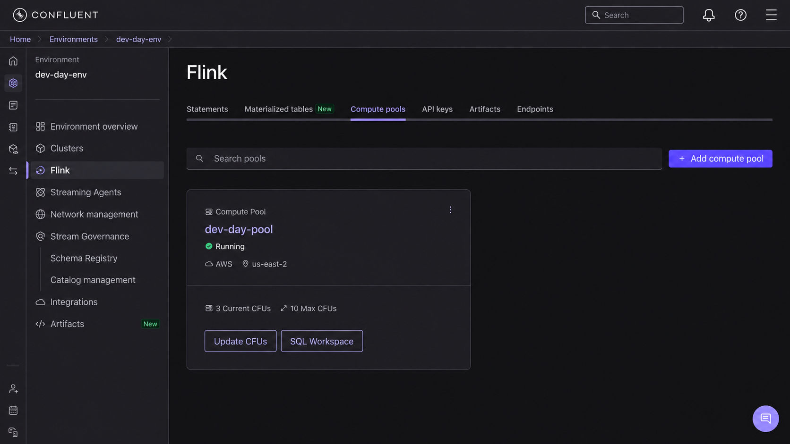
Build the Enrichment & Forecasting Pipeline (Flink SQL)
Now instruct Bob to deploy the continuous stream transformations as Materialized Tables.
5.1 Key Users Lookup Table
Prompt Bob
"Create a materialized table called users_keyed in Flink from the sample_data_users stream, setting userid as the non-enforced primary key."
In Flink SQL, a non-enforced primary key (PRIMARY KEY … NOT ENFORCED) declares which column uniquely identifies each row, in this case userid, but does not validate or reject duplicate values at insert time. Flink uses this hint purely as metadata for query optimisation (e.g. to avoid unnecessary deduplication joins). The responsibility for ensuring uniqueness lies with the upstream data source, not the table itself.
Bob synthesizes and submits the Flink SQL statement:
5.2 Enrich Trades with Customer Context
Prompt Bob
"Create a materialized table called trades_enriched that performs a temporal join between sample_data_stock_trades and users_keyed on userid as of the trade rowtime."
Bob constructs the temporal join query and submits it:
5.3 Real-Time Trade Forecasting (ML_FORECAST)
Prompt Bob
"Create a materialized table called trades_forecast that tumbles trades_enriched into 10-second windows per stock symbol and applies ML_FORECAST with a minimum training size of 10 and horizon of 5 to predict next-window trade counts and upper bounds."
Bob constructs the windowed ML forecasting pipeline and submits it:
Check Flink → Materialized tables and Statements in the Confluent Cloud console. Confirm all 3 pipelines are active.
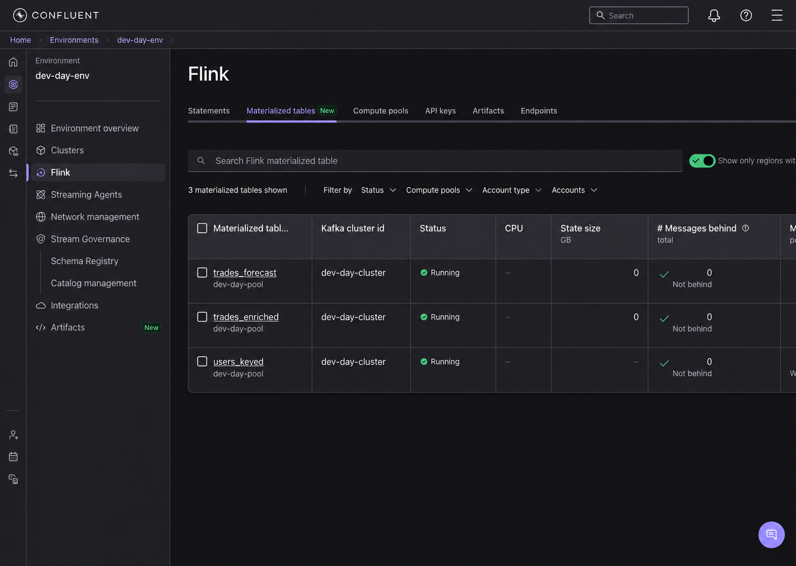
Query Live Enriched & Forecast Streams
Inspect the live streams in the Confluent SQL Workspace to verify that transformations and real-time predictions are producing data.
6.1 Inspect Enriched Trades
Open your SQL Workspace in Confluent Cloud (or connect via Flink Shell) and run:
You will see live trade transactions continuously enriched with user demographics (regionid, gender) flowing through the pipeline in real time.
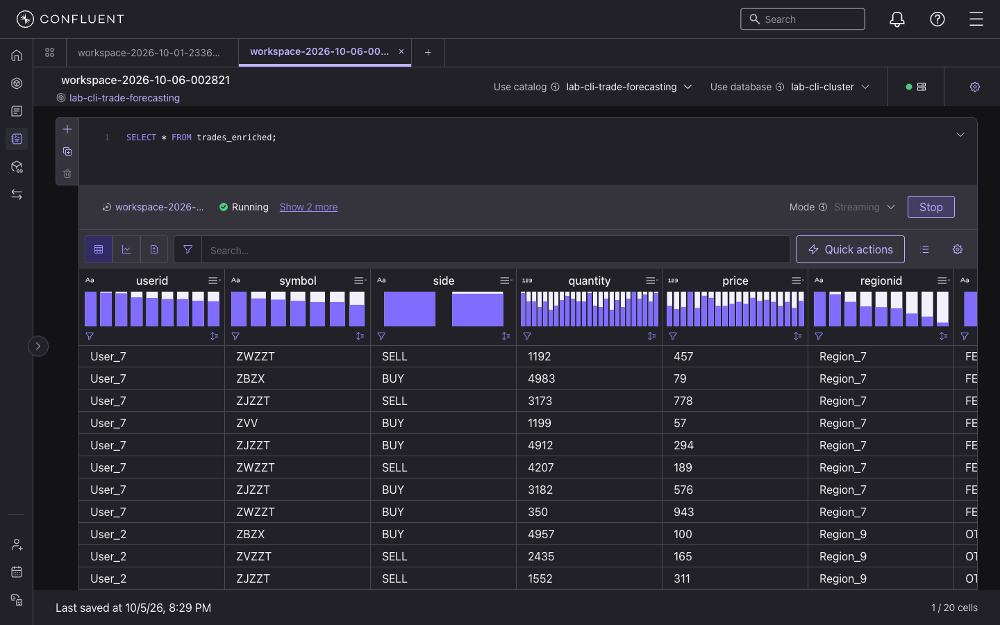
6.2 Inspect Real-Time Predictions & Surges
Prompt Bob
"Write a query to retrieve the most recent window's forecast for each stock symbol so we can see which stocks are surging."
In your SQL Workspace (or via Flink Shell), run:
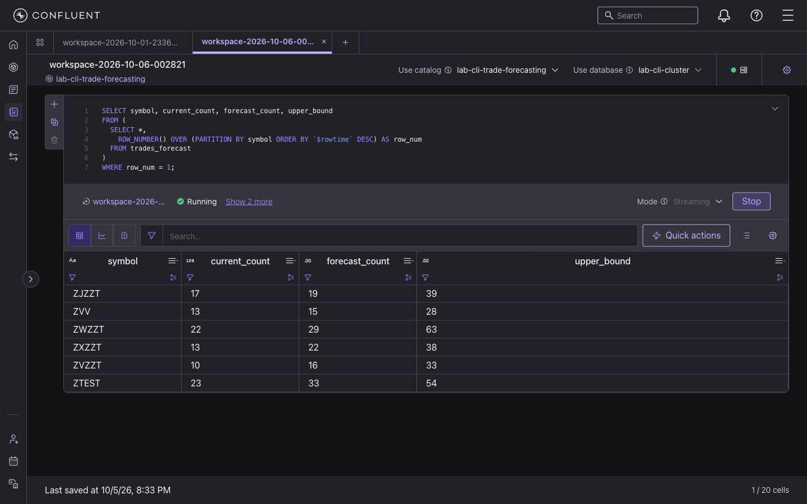
Interpreting the forecast
current_count: trades recorded in the latest 10-second window.forecast_count: predicted volume for the upcoming window.upper_bound: upper confidence interval.- When
forecast_count>current_count, trading activity is heating up, allowing proactive capacity and alert provisioning.
Stream Live Forecast Data to Snowflake
With trades_forecast now producing real-time ML predictions and verified in Confluent Cloud, this step connects Confluent Cloud to Snowflake, streaming every forecast row into a live Snowflake table automatically. You will sign up for a free Snowflake trial, install the Snowflake CLI, set up authentication, and deploy the Snowflake Sink Connector entirely through Bob prompts.
By the end of this step you will have a live LAB.CONFLUENT.TRADES_FORECAST table in Snowflake that grows continuously as new forecasts are produced by Flink.
7.1 Sign Up for Snowflake Free Trial
Before Bob can help, you need a Snowflake account. This is a one-time manual step.
- Go to signup.snowflake.com and create a free trial account.
- Choose AWS as your cloud provider and US East (Ohio) as the region. This matches your Confluent Cloud cluster.
- Verify your email and log in to app.snowflake.com.
- Once logged in, find your account identifier from the URL
https://app.snowflake.com/<org>/<account>. Note both parts (e.g.vrlnecqandxo34979) combined asvrlnecq-xo34979.
You can also find your account identifier by clicking your account name in the bottom-left of the Snowflake UI.
7.2 Install Snowflake CLI
Prompt Bob
"Install the Snowflake CLI tool on my Machine."
Snowflake CLI version: 3.x.x
You may see UserWarning: incompatible version of 'pyarrow' after every snow command. It does not affect functionality; ignore it.
7.3 Connect Snowflake CLI to Your Account
This step requires your Snowflake password. You will run this command yourself in the terminal. Bob cannot enter passwords on your behalf.
Prompt Bob
"What command do I run to add my Snowflake account to the Snow CLI? My account identifier is <YOUR_ACCOUNT_ID>, my username is <YOUR_USERNAME>, and my warehouse is COMPUTE_WH."
Bob will print the exact command for you. It will look like:
It will prompt you for your password interactively. This is intentional. Use --database SNOWFLAKE (not LAB) at this stage since the LAB database doesn't exist yet.
Once you've run it, ask Bob to verify the connection:
Prompt Bob
"Verify my Snowflake CLI connection called lab is working."
Your Snowflake username and account ID returned.
7.4 Create Snowflake Database and Schema
Prompt Bob
"Create a database called LAB and a schema called CONFLUENT inside it in Snowflake using the lab connection."
Database LAB successfully created and Schema CONFLUENT successfully created.
The connector will auto-create it with the correct schema. Pre-creating it causes a schema compatibility error.
7.5 Generate RSA Key Pair & Assign to Your Snowflake User
The Snowflake Sink Connector does not support username + password authentication. It requires an RSA key pair. Bob will generate the key pair and assign the public key to your Snowflake user.
Prompt Bob
"Generate an RSA key pair for the Snowflake Sink Connector and assign the public key to my Snowflake user <YOUR_USERNAME> using the lab connection."
Statement executed successfully
7.6 Deploy the Snowflake Sink Connector
Prompt Bob
"Deploy a Snowflake Sink Connector called SnowflakeSink_trades_forecast that streams the trades_forecast Kafka topic into LAB.CONFLUENT in Snowflake. Use my Snowflake account <YOUR_ACCOUNT_ID>, username <YOUR_USERNAME>, role ACCOUNTADMIN, SNOWPIPE_STREAMING ingestion with schematization enabled, and AVRO input format."
Bob builds the connector config via Python (to safely embed the private key) then deploys it:
Navigate to Connectors in the Confluent Cloud console. Confirm SnowflakeSink_trades_forecast shows Running status with 1 task running.
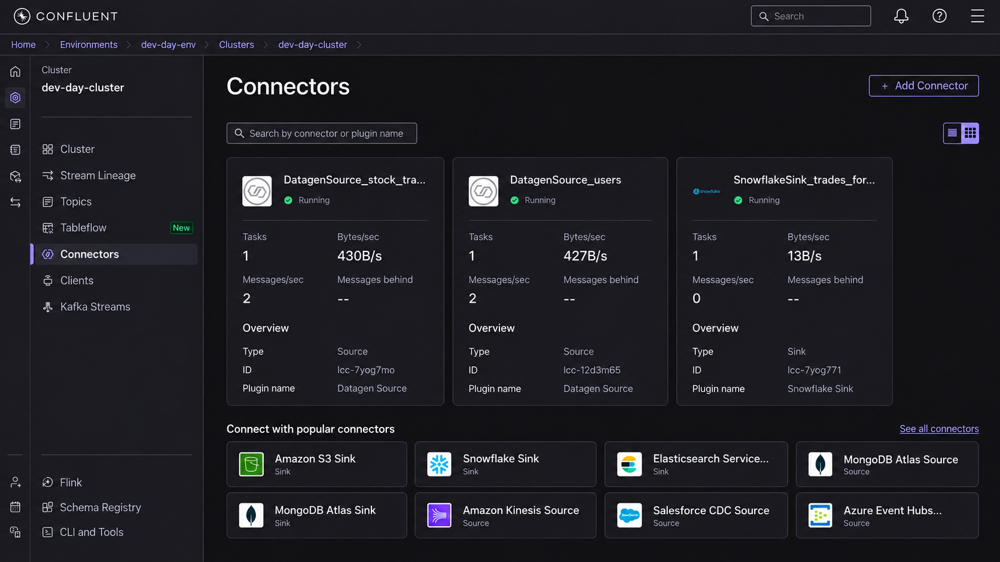
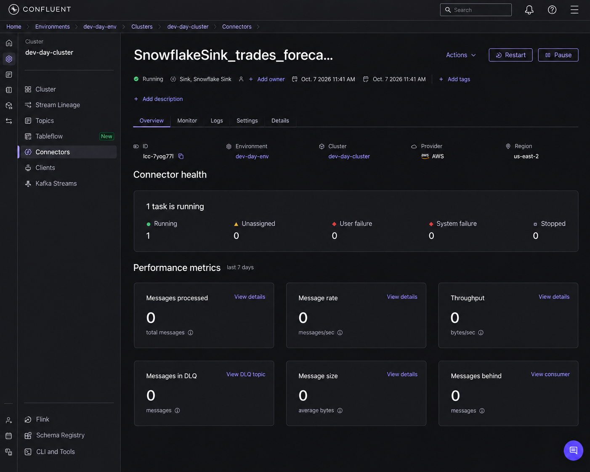
7.7 Verify Live Data Arriving in Snowflake
Wait approximately 90 seconds after the connector reaches Running status, then ask Bob to check.
Prompt Bob
"Check how many rows have arrived in LAB.CONFLUENT.TRADES_FORECAST in Snowflake, and show me the 10 most recent forecast rows."
Expected output (example)
SYMBOL | TS | CURRENT_COUNT | FORECAST_COUNT | UPPER_BOUND ZWZZT | 1791388000000 | 19 | 23.0 | 67.0 ZBZX | 1791388000000 | 16 | 16.0 | 30.0 ZVV | 1791388000000 | 16 | 15.0 | 31.0 ZJZZT | 1791388000000 | 28 | 18.0 | 36.0 ...
ML_FORECAST needs a minimum of 10 training windows per symbol before emitting forecasts. Once that threshold is met, new rows arrive every ~10 seconds per symbol.
Open Snowflake and navigate to LAB → CONFLUENT → TRADES_FORECAST. You should see the table auto-created with 6 columns and a live row count growing.
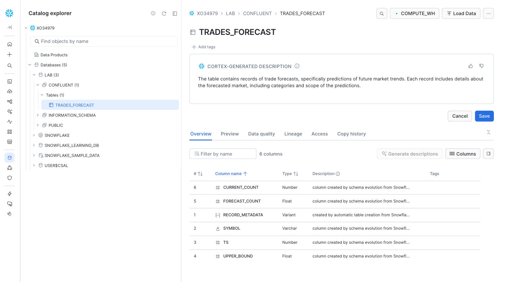
Click the Preview tab to see live rows streaming in from Confluent.
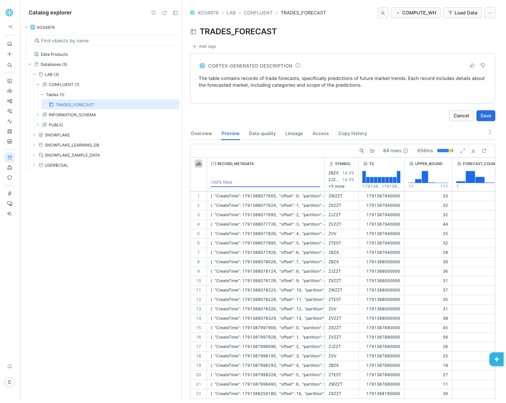
What the columns mean
| Column | Meaning |
|---|---|
SYMBOL | Stock ticker (e.g. ZBZX, ZVZZT) |
TS | Window end timestamp in milliseconds |
CURRENT_COUNT | Actual trades recorded in the latest 10-second window |
FORECAST_COUNT | ML-predicted trade volume for the next window |
UPPER_BOUND | Upper confidence bound of the forecast |
RECORD_METADATA | Kafka metadata (partition, offset, topic, timestamp) |
When FORECAST_COUNT > CURRENT_COUNT, trading activity is heating up. The platform can proactively provision capacity or trigger alerts before the surge peaks.